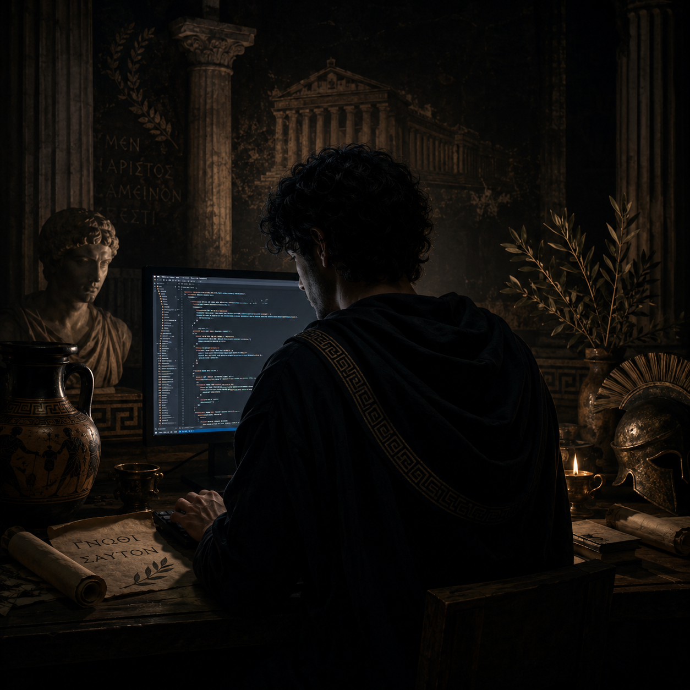

About the game

Aluca Sol is the creator and sole developer of Triarchs of Olympus, built from the ground up as a browser-based, six-player MOBA.
Active Development
New content, players, enemies and playable characters are in development, and will be added regularly. The browser version will be updated immediately with this site, so the new content is available to everyone at time of release.
The downloadable client is optional, but will be available for those who prefer to host more stable online games, or find the browser experience doesn't function exactly to their liking. It is under development and should be available from this site, soon.
Design Philosophy
This game was designed to be fun and free.
There are ways to support the development of this game:
- -Ko-fi
- - Purchase of 'Favour' in-game, to be spent in the Emporion.
but of course, you are also welcome to play it for free, for as long as you like.